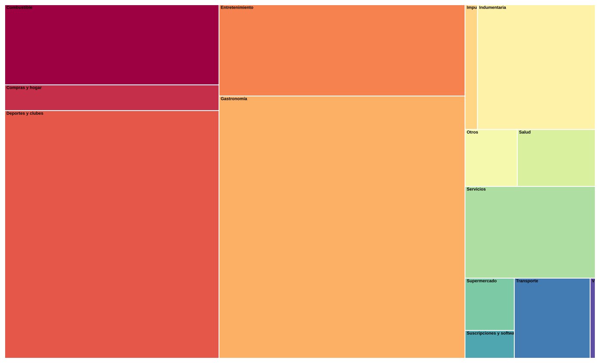

De los resúmenes a las visualizaciones
El análisis parte de movimientos extraídos de resúmenes de tarjetas de crédito. Se organizaron los registros, se revisaron manualmente las categorías de los comercios y se construyeron visualizaciones para responder cuatro preguntas: ¿en qué rubros se concentra el gasto?, ¿cómo varían los consumos de cada tarjeta a lo largo de los meses?, ¿qué importes son más frecuentes en las compras? y ¿qué días concentran los mayores gastos?
¿En qué categorías se concentra el gasto?
El área de cada rectángulo representa el importe total de consumos en pesos argentinos de una categoría. Cuanto más grande es el rectángulo, mayor es su peso relativo en el total analizado.

Lectura del gráfico
Gastronomía y Deportes y clubes ocupan las superficies más grandes del Treemap. Esto permite identificar visualmente los rubros con mayor participación en los importes analizados, sin confundir el monto gastado con la cantidad de transacciones.
¿Cómo evolucionaron los gastos de Visa y Mastercard?
Las dos series comparan los importes mensuales en pesos argentinos. Cada punto representa un mes con datos, agrupados según la fecha de consumo registrada, no necesariamente el mes de facturación de una cuota.
Gráfico interactivo publicado en Flourish. Los meses sin registros de una tarjeta se representaron como cero en el CSV de visualización; esto no prueba ausencia real de gastos.
¿De qué tamaño son mis compras?
Esta visualización muestra cómo se distribuyen las transacciones según su importe en pesos argentinos. Las compras se agruparon en intervalos de $25.000, con una última categoría de $150.000 o más. La altura de cada columna representa la cantidad de transacciones dentro de ese rango.
Fuente: consumos individuales en ARS, excluyendo importes negativos y devoluciones. Herramienta: Datawrapper. Total analizado: 448 transacciones.
Lectura del gráfico
La distribución muestra una clara concentración de transacciones de importes relativamente bajos. De las 448 compras analizadas, 234 corresponden a importes inferiores a $25.000, mientras que otras 112 se encuentran entre $25.000 y $50.000.
En conjunto, estos dos rangos representan aproximadamente el 77,2% de las transacciones. Esto indica que predominan las compras de menor importe en términos de frecuencia, aunque no necesariamente en términos de dinero total gastado.
¿Qué días concentran mis mayores gastos?
Este calendario interactivo muestra los gastos diarios realizados con Visa y Mastercard en pesos argentinos. La intensidad del color representa el importe total registrado en cada día. El filtro permite seleccionar distintos meses y comparar los patrones de consumo.
Fuente: consumos de tarjetas de crédito procesados. Herramienta: Tableau Public. Solo importes en ARS. Los espacios sin color indican fechas sin transacciones registradas en los datos disponibles.
Lectura del gráfico
Los días más oscuros representan mayores importes de consumo. El calendario permite identificar concentraciones de gastos y explorar diferencias entre los meses mediante el filtro interactivo.
¿Qué nos muestran los datos?
- Concentración del gasto: Gastronomía y Deportes y clubes destacan por su participación en el gasto en ARS.
- Variación temporal: la serie de Visa muestra un pico marcado hacia diciembre de 2025; Mastercard registra un pico destacado en noviembre de 2025.
- Comparación entre tarjetas: Visa y Mastercard presentan patrones diferentes de consumo, que se pueden explorar mes a mes en la visualización interactiva.
- Frecuencia de compras: el 77,2% de las transacciones en ARS tiene importes inferiores a $50.000.
- Distribución diaria: el calendario permite identificar los días de mayor gasto y explorar cómo cambia la concentración de consumos entre meses.
Cómo interpretar los resultados
Este análisis es descriptivo. Las fechas abarcan los registros disponibles, no necesariamente un año calendario completo. Las compras en cuotas pueden aparecer asociadas a su fecha de consumo, y la ausencia de registros en un mes no garantiza gasto cero.
Los montos en dólares no se suman a los importes en ARS, para evitar mezclar monedas sin un tipo de cambio definido. Además, la frecuencia de transacciones no debe confundirse con su contribución al gasto total.